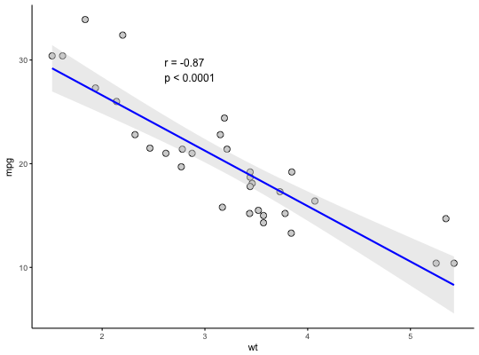
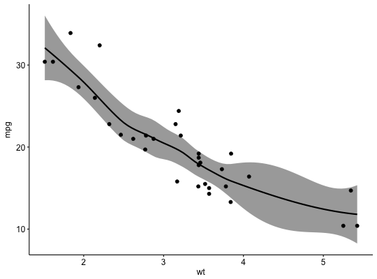
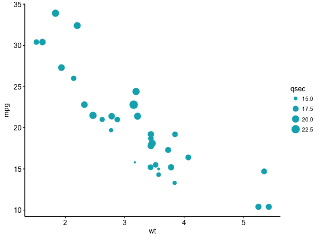
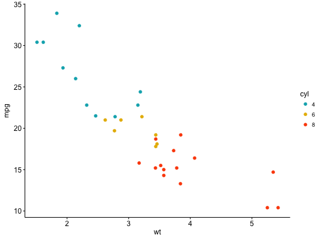
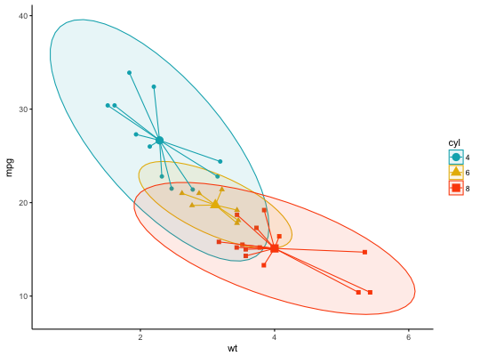

Scatter plot
Create a scatter plot.
ggscatter(data, x, y, color = "black", fill = "lightgray", palette = NULL, shape = 19, size = 2, point = TRUE, rug = FALSE, add = c("none", "reg.line", "loess"), add.params = list(), conf.int = FALSE, conf.int.level = 0.95, fullrange = FALSE, ellipse = FALSE, ellipse.level = 0.95, ellipse.type = "norm", ellipse.alpha = 0.1, mean.point = FALSE, mean.point.size = 2 * size, star.plot = FALSE, star.plot.lty = 1, star.plot.lwd = NULL, label = NULL, font.label = c(12, "plain"), label.select = NULL, repel = FALSE, label.rectangle = FALSE, cor.coef = FALSE, cor.method = "pearson", cor.coef.coord = c(NULL, NULL), cor.coef.size = 12, ggp = NULL, ggtheme = theme_classic2(), ...)
Arguments
- data
- a data frame
- x, y
- x and y variables for drawing.
- color, fill
- point colors.
- palette
- the color palette to be used for coloring or filling by groups. Allowed values include "grey" for grey color palettes; brewer palettes e.g. "RdBu", "Blues", ...; or custom color palette e.g. c("blue", "red"); and scientific journal palettes from ggsci R package, e.g.: "npg", "aaas", "lancet", "jco", "ucscgb", "uchicago", "simpsons" and "rickandmorty".
- shape
- point shape. See
show_point_shapes. - size
- Numeric value (e.g.: size = 1). change the size of points and outlines.
- point
- logical value. If TRUE, show points.
- rug
- logical value. If TRUE, add marginal rug.
- add
- allowed values are one of "none", "reg.line" (for adding linear regression line) or "loess" (for adding local regression fitting).
- add.params
- parameters (color, size, linetype) for the argument 'add'; e.g.: add.params = list(color = "red").
- conf.int
- logical value. If TRUE, adds confidence interval.
- conf.int.level
- Level controlling confidence region. Default is 95%. Used only when add != "none" and conf.int = TRUE.
- fullrange
- should the fit span the full range of the plot, or just the data. Used only when add != "none".
- ellipse
- logical value. If TRUE, draws ellipses around points.
- ellipse.level
- the size of the concentration ellipse in normal probability.
- ellipse.type
- Character specifying frame type. Possible values are
'convex', 'confidence' or types supported by
stat_ellipseincluding one of c("t", "norm", "euclid"). - ellipse.alpha
- Alpha for ellipse specifying the transparency level of fill color. Use alpha = 0 for no fill color.
- mean.point
- logical value. If TRUE, group mean points are added to the plot.
- mean.point.size
- numeric value specifying the size of mean points.
- star.plot
- logical value. If TRUE, a star plot is generated.
- star.plot.lty, star.plot.lwd
- line type and line width (size) for star plot, respectively.
- label
- the name of the column containing point labels. Can be also a character vector with length = nrow(data).
- font.label
- a vector of length 3 indicating respectively the size (e.g.: 14), the style (e.g.: "plain", "bold", "italic", "bold.italic") and the color (e.g.: "red") of point labels. For example font.label = c(14, "bold", "red"). To specify only the size and the style, use font.label = c(14, "plain").
- label.select
- character vector specifying some labels to show.
- repel
- a logical value, whether to use ggrepel to avoid overplotting text labels or not.
- label.rectangle
- logical value. If TRUE, add rectangle underneath the text, making it easier to read.
- cor.coef
- logical value. If TRUE, correlation coefficient with the p-value will be added to the plot.
- cor.method
- method for computing correlation coefficient. Allowed values are one of "pearson", "kendall", or "spearman".
- cor.coef.coord
- numeric vector, of length 2, specifying the x and y coordinates of the correlation coefficient. Default values are NULL.
- cor.coef.size
- correlation coefficient text font size.
- ggp
- a ggplot. If not NULL, points are added to an existing plot.
- ggtheme
- function, ggplot2 theme name. Default value is theme_pubr(). Allowed values include ggplot2 official themes: theme_gray(), theme_bw(), theme_minimal(), theme_classic(), theme_void(), ....
- ...
- other arguments to be passed to
geom_pointandggpar.
Details
The plot can be easily customized using the function ggpar(). Read ?ggpar for changing:
- main title and axis labels: main, xlab, ylab
- axis limits: xlim, ylim (e.g.: ylim = c(0, 30))
- axis scales: xscale, yscale (e.g.: yscale = "log2")
- color palettes: palette = "Dark2" or palette = c("gray", "blue", "red")
- legend title, labels and position: legend = "right"
- plot orientation : orientation = c("vertical", "horizontal", "reverse")
See also
Examples
# Load data data("mtcars") df <- mtcars df$cyl <- as.factor(df$cyl) head(df[, c("wt", "mpg", "cyl")], 3)#> wt mpg cyl #> Mazda RX4 2.620 21.0 6 #> Mazda RX4 Wag 2.875 21.0 6 #> Datsun 710 2.320 22.8 4# Basic plot # +++++++++++++++++++++++++++ ggscatter(df, x = "wt", y = "mpg", color = "black", shape = 21, size = 3, # Points color, shape and size add = "reg.line", # Add regressin line add.params = list(color = "blue", fill = "lightgray"), # Customize reg. line conf.int = TRUE, # Add confidence interval cor.coef = TRUE # Add correlation coefficient )# loess method: local regression fitting ggscatter(df, x = "wt", y = "mpg", add = "loess", conf.int = TRUE)# Control point size by continuous variable values ("qsec") ggscatter(df, x = "wt", y = "mpg", color = "#00AFBB", size = "qsec")# Change colors # +++++++++++++++++++++++++++ # Use custom color palette # Add marginal rug ggscatter(df, x = "wt", y = "mpg", color = "cyl", palette = c("#00AFBB", "#E7B800", "#FC4E07") )# Add group ellipses and mean points # Add stars # +++++++++++++++++++ ggscatter(df, x = "wt", y = "mpg", color = "cyl", shape = "cyl", palette = c("#00AFBB", "#E7B800", "#FC4E07"), ellipse = TRUE, mean.point = TRUE, star.plot = TRUE)# Textual annotation # +++++++++++++++++ df$name <- rownames(df) ggscatter(df, x = "wt", y = "mpg", color = "cyl", palette = c("#00AFBB", "#E7B800", "#FC4E07"), label = "name", repel = TRUE)